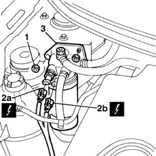
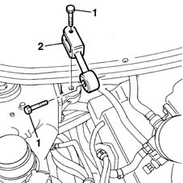

1008C10 power unit upper reaction link r r
- Path
- Procedures > 10 ENGINE UNIT > 1008 POWER UNIT SUPPORTS > 1008C power unit reaction elements > 1008C10 power unit upper reaction link r r
- Kind
- repair procedure (removal / refitting; the operation number is the code)
- Applies to
- engines: 1.9 JTD 8V; all production periods
- Interactive page
- https://sloeber94.github.io/elrnDB-fMltpl/en/#/2891350
Applies to: engines: 1.9 JTD 8V; all production periods
 Removing
Removing
 Refitting
RefittingOpen the bonnet lid.
1. Unscrew the retaining nuts.
2. Disconnect fuel filter electrical connections (2a) and (2b).
 | Name | Connector |
|---|---|---|
2a | Diesel heater resistance |
| Name | Connector |
|---|---|---|
2b | Diesel heater resistance |
3. Place the fuel filter outside the working area.

Applies to: engines: 1.9 JTD 8V; all production periods
1. Unscrew both retaining bolts.
2. Remove the reaction link.

Applies to: engines: 1.9 JTD 8V; all production periods
Refitting
RemovingFit the reaction rod in its seat.
Screw in the link retaining bolts and then tighten to torque.
 | Fastening | Component | Ø | Value (daNm) |
|---|---|---|---|---|
- | Bolt | REACTION ROD | M10 x 1.25 | 5 |
| Fastening | Component | Ø | Value (daNm) |
|---|---|---|---|---|
- | Nut | REACTION ROD | M10 x 1.25 | 5 |
Fit the fuel filter in its seat.
Tighten the retaining nuts.
Connect the fuel filter electrical connections.
| Name | Connector |
|---|---|---|
- | Diesel heater resistance |
| Name | Connector |
|---|---|---|
- | Diesel heater resistance |
Close the bonnet lid.
Topics linked from this page (1)
Topics that link to this page (28)
- 1004B12 power unit with manual gearbox - r+r for versions with a/c
- 1008C14 engine link bracket - r r
- 1008C16 body link bracket - r r
- 1016C11 single cylinder head-r r gasket for versions with air conditioner
- 1020D16 front crankshaft oil seal cover - r+r and replace gaskets for versions with airconditioner
- 1020D20 front crankshaft cover oil seal - replace for versions with air conditioner
- 1028H11 piston connecting rod set - r r
- 1032B14 toothed timing belt - r + r for timing adjustment or replacement versions with air conditioner
- 1032B47 toothed drive pulley - r r for versions with air conditioner
- 1032B53 driven toothed pulley (one) - r r for versions with air conditioner
- 1032C19 mobile timing belt tensioner - r r for versions with air conditioner
- 1032C31 fixed timing tensioner - r r
- 1032D12 timing system protective cover(s) - r + r
- 1036B10 overhead camshaft - r r on vehicle
- 1060E10 pressure pump - r r
- 1060E30 pressure pump pulley - r r
- 1060E40 supplementary pressure pump - r r
- 1060G22 cam angle sensor - r r
- 1060G90 diesel injection wiring harness - r r
- 1072B10 inlet manifold - r + r and replace seal
- 1088C12 water pump - r+r for versions with air conditioner
- 1280B21 (Pump) - MASTER CYLINER R.R. for right hand drive versions
- 1280B35 FLEXIBLE PIPE between intermediate rigid pipe and (pump) - master cylinder R.R. for right hand drive versions
- 3330C12 (PUMP) - MASTER CYLINDER R.R. for right hand drive versions
- 3330C38 FLEXIBLE PIPE - FRONT section - from brake fluid RESERVOIR to (pump) - MASTER CYLINDER R.R. for right hand drive versions
- 3330D18 brake servo r r for right hand drrive versions
- 4130B32 power steering pump mount - r r
- 4130B35 supply pipe from fluid resevior to power steering pump r r for right hand drive versions